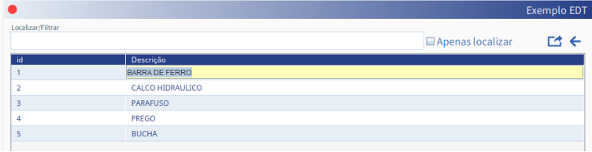

Esta tag permite definir regras de edição de colunas na tela de grid.
Ao clicar no botão de retornar (existente na tela de grid) durante uma edição, a mesma
será cancelada.
ID:TYPE:LENGTH:PARAMETERS:TABLE_NAME:COLUMN_NAME:USER_DESCRIPTION:REFRESH
Seu conteúdo varia de acordo com o tipo de dado da coluna a ser editada (CK, FK, DT, TX,
NM, DC, PW, XX).
[EDT]
1: TX: 100 : :TITENS : DESC_TECNICA ::R
[SQL]
select id "id#20", desc_tecnica "Descrição#80$1" from titens
